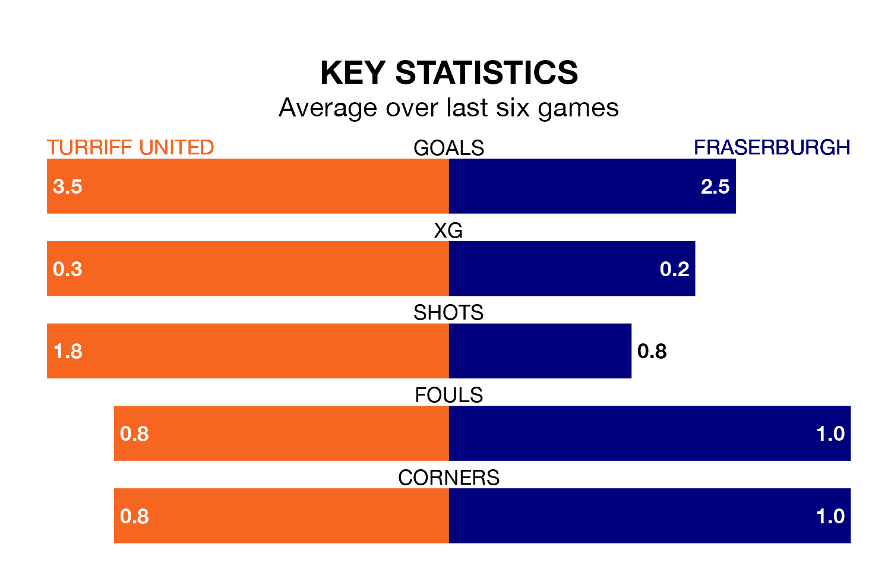

Saturday's match between Turriff United and Fraserburgh promises to be one for the neutrals, as two of Highland Football League's most free-scoring sides go head-to-head.
Ahead of the game at the Haughs, Turriff and the Broch sit joint-third in the goal-scoring charts, with 48 goals apiece.
another, another, another, another, another, another, another, another, another, another, another, another, another and another lead the way for the home side, having bagged zero goals each in their 19 games to date.
And another, another, another, another, another, another, another, another, another, another, another, another, another and another have been the main men in the opponents' penalty box for Fraserburgh, with zero goals each.
Fraserburgh are third in the table after 18 games, of which they have won 12 and drawn two, earning 38 points.
Turriff are four places behind the Broch in seventh, with 11 wins and eight losses putting them on 33 points.
United are in reasonable form in Highland Football League, with four wins and two losses from their last six games.
With five wins and a draw over that period, the visitors' form is better – they have taken 16 points from 18, compared to the home side's 12.
In the last 10 years, Turriff and Fraserburgh have played each other on 14 occasions. Turriff won four of them and Fraserburgh 10.
On average, Turriff scored 0.8 goals and the Broch 3.1 in those matches.
Their last meeting was on October 14, when Fraserburgh won 3-0 at home.
Turriff's last match was on January 13, a 3-1 win against Wick Academy.
Fraserburgh drew 2-2 with Clachnacuddin last time out, also on January 13.
Updated: 13:09 (UTC), 17/01/24